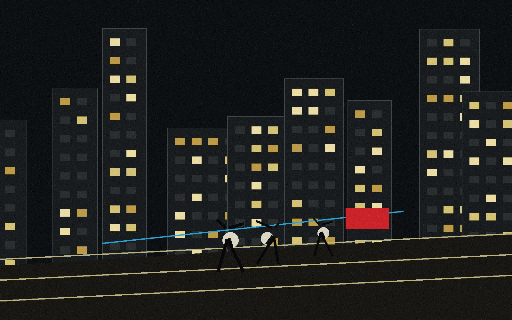
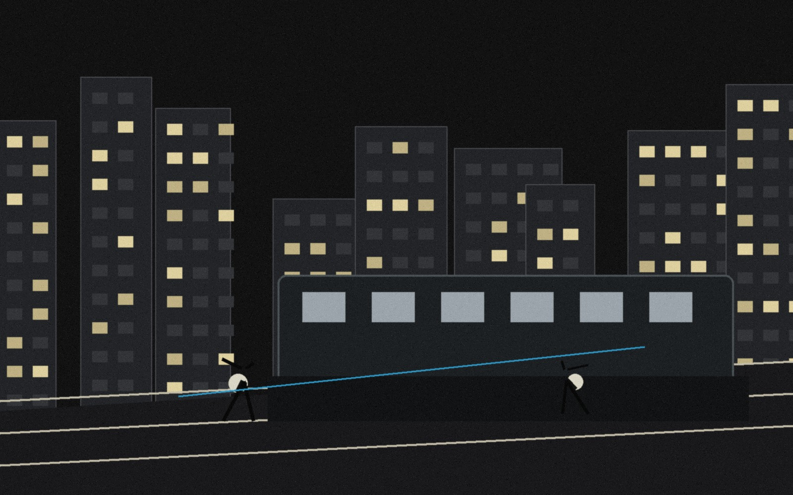
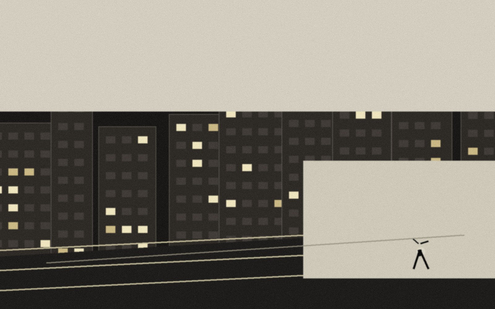

选择照片目录
读取 RAW / JPG / PNG 预览、文件名、路径和基础元数据。
工作台生成：照片队列本地摄影工作台
LumaSift 把一次拍摄拆成可操作的桌面流程：选择照片目录，本地生成候选池，把高价值照片送入 Qwen 深评，再用 KEEP / MAYBE / REJECT 标记和中文修图参数完成交付。

#01 / STORY 91
#02 / TIMING RISK
#03 / SUBJECT LOST导入 → 初筛 → 深评 → 修图
工作台把大批照片先压成候选池，再用分数、证据和人工标记决定保留、复核或淘汰，最后生成可执行的中文修图方案。
读取 RAW / JPG / PNG 预览、文件名、路径和基础元数据。
工作台生成：照片队列按结构、亮度、相似组、恢复空间和重复片压缩样本量。
工作台生成：候选池把 Top-N 压缩预览交给 Qwen，返回关系、瞬间、风险和保留依据。
工作台生成：证据链把裁切、局部蒙版、HSL、色彩分级和保留项写成参数。
工作台生成：编辑计划下载与输出
软件会在本地保存排序、标记、深评证据和修图方案。选择候选照片时，右侧分数、证据说明和参数建议同步更新。
KEEP：故事证据强，技术瑕疵只作为后期恢复信号。